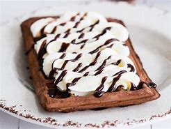

☾ Cheese Fries ☾
ㅤ

Potrzebne rzeczy:
Mąka przenna, Proszkek do pieczenia, sól
cukier, cukier wanilinowy, mleko
2 jaja i olej roślinny
ㅤ
Etapy Przyrządzania:
Mąke wsypać do miski, dodać proszek do pieczenia, sól, cukier, cukier wanilinowy. Wszytko wymieszać
Dodać mleko (350ml), jajka oraz olej roślinny (125ml), Zmiksować mikserem lun wymieszać rózgą na gładką masę. Ciasto można odctwić aby odpoczeło (15min)ale nie jest o konieczne
Rozgrzać gofrownicę. Godry piec na złoty kolor przez 3-3.5 min. Nakłdamy ciasro chochlą, następnie wypuką jej stroną rosprowadzamy ciasto dokładnie po całej powierzchni
Gofry wyłuż na talerz i posyp cukrem pudrem
SMACZNEGO!